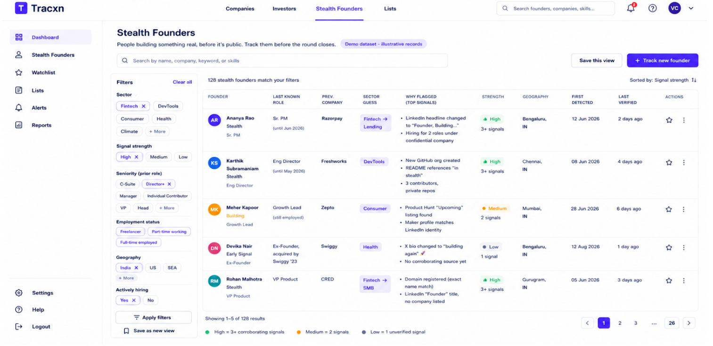
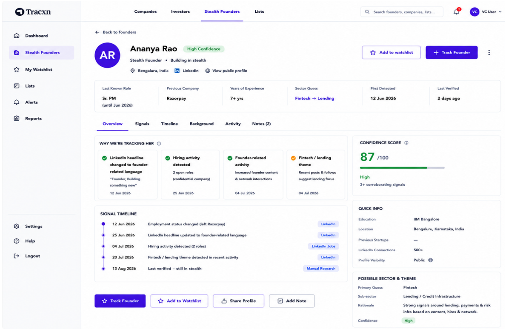
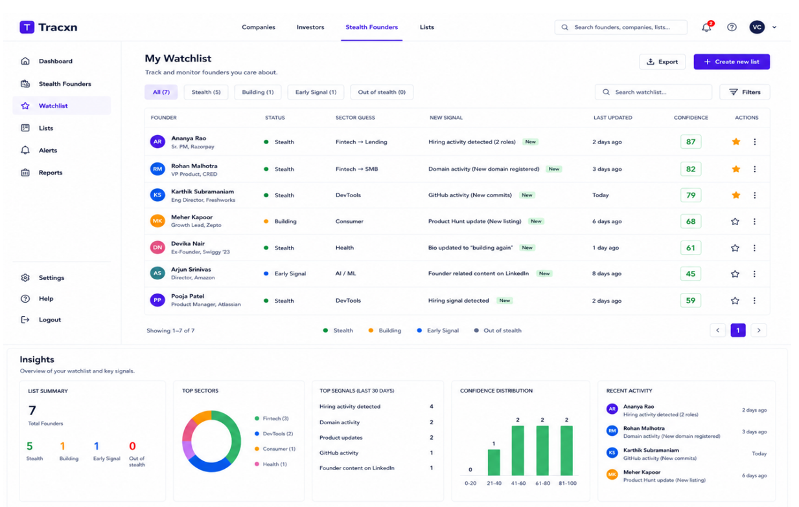

A portfolio presentation of the proposed stealth-founder experience. Click any screen below to open its dedicated HTML page.

The discovery workspace for identifying promising stealth founders using multiple signals.
Open interactive page →
A detailed founder view combining profile context, confidence score, evidence, and a signal timeline.
Open interactive page →
A monitoring workspace for saved founders, new signals, changes over time, and aggregate insights.
Open interactive page →